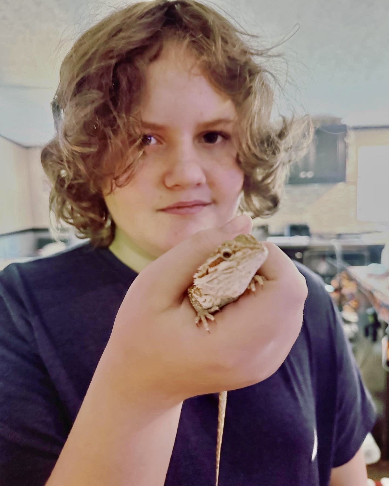
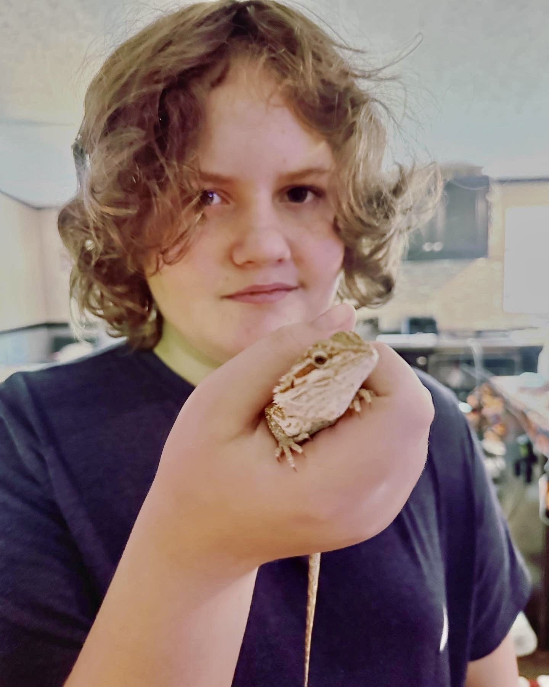

Bert is a one year old bearded dragon that we acquired as a class pet this past year.
He has quickly become a favorite in the middle school hallways and always up to some kind of trouble. We received Bert as part of a grant for having pets in the classroom and he has been such a positive addition to our classroom environment. Students are responsible for feeding Bert, cleaning up if he makes a mess when they have him, and just holding him (as long as he isn't a distraction). Getting a classroom pet was one of the best things I did for my students :)
Follow along for some of the adventures that Bert finds himself in!

 
